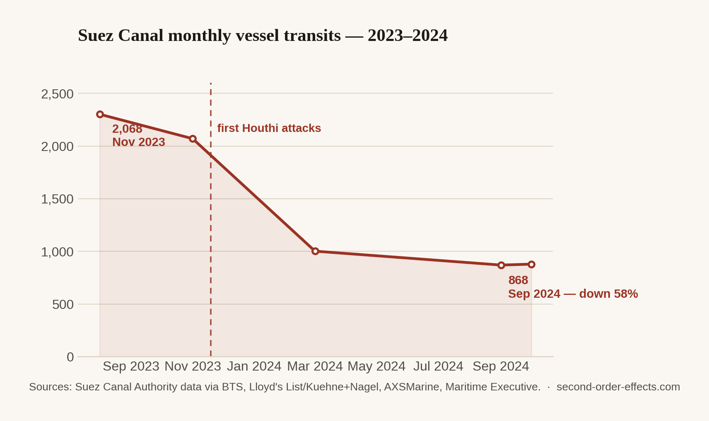

The Long Way Round: How a Missile in the Red Sea Rerouted My Parcel
Roughly 14% of global maritime trade passes through the Red Sea. Since late 2023, Houthi attacks have sent much of it around Africa instead — adding two weeks and a million dollars a voyage.
Around 14% of global maritime trade, and 30% of containerised trade, normally moves through the Red Sea and the Suez Canal — the shortest sea route between Asia and Europe. Since November 2023, Houthi forces in Yemen have launched more than 190 attacks on commercial shipping transiting the area, framed as a response to the conflict in Gaza. The direct target has been specific ships. The indirect target, whether intended or not, has been the economics of an entire trade route.
Ships voting with their engines
Shipping lines did what most rational actors do when faced with a serious safety risk: they left. Suez Canal transits fell from around 2,068 in November 2023 to about 877 by October 2024 — a decline of well over half in under a year. Hundreds of vessels across the major container carriers rerouted around the Cape of Good Hope instead of taking the Suez shortcut. That detour adds somewhere between 10 and 15 days of transit time depending on the specific route, and roughly $1 million in extra cost per voyage once you count the fuel, crew time, and insurance.
For cargo actually moving to the US East Coast, shipments from the affected region were taking 47% longer than before the crisis; shipments to Europe were taking 33% longer. Insurance premiums for vessels that kept transiting the Red Sea rose sharply to compensate for the elevated risk, which only pushed more carriers toward the safer, longer, pricier route around Africa — a feedback loop with no obvious floor.

Singapore's ringside seat
Singapore's port sits close to the other end of this problem. As one of the world's busiest transshipment hubs, it absorbs a large share of the knock-on effect from rerouted global shipping, even though the Red Sea itself is thousands of kilometres away. The crisis marked a genuine shift in container transshipment patterns, adding delays to Singapore's own imports of petrochemicals, specialty chemicals, and machinery arriving from Europe. Average vessel waiting times at the Port of Singapore rose by around 20% in 2023, even as total vessel arrival tonnage set a record above 3 billion gross tonnes for the first time — the port handling more volume and more congestion in the exact same year.
Nobody attacking a container ship in the Red Sea is trying to slow down a delivery to Tampines. But shipping is a single, interconnected network, and a disruption anywhere in it shows up as friction everywhere in it — including in ports that never see the ships involved.
The version that reaches an inbox
This is the one I felt most directly — not as a customer waiting on a parcel, but as someone coordinating the other end of the pipe. Shipment planning and export logistics are a core part of what I do for my family's agricultural commodities business, and the Red Sea crisis was the first time I watched a geopolitical event rewrite a shipping timeline I was personally responsible for: recalculating transit windows, absorbing longer lead times into commitments already made to buyers, and explaining to a supplier why a vessel that should have arrived on schedule was somewhere off the coast of South Africa instead. There's a carbon footprint angle here too, one that rarely makes the trade press: ships rerouted around the Cape release roughly 42% more carbon per vessel than the same voyage through Suez, purely because the route is longer. A localised security crisis, in other words, carries a measurable global emissions footprint too — one more layer removed from the original headline, and one more reason the "second order" framing rarely stops at just one order.
Sources
- Atlas Institute for International Affairs — the Red Sea shipping crisis, 2024–2025
- project44 — a year of Houthi attacks and their impact on global shipping
- Singapore Ministry of Trade and Industry — written reply on Red Sea shipping disruptions and Singapore's economy
- Maritime Fairtrade — Singapore maritime industry, 2024 outlook
- Chart data compiled from Suez Canal Authority figures via the Bureau of Transportation Statistics, Lloyd's List/Kuehne+Nagel, and AXSMarine.
Comments